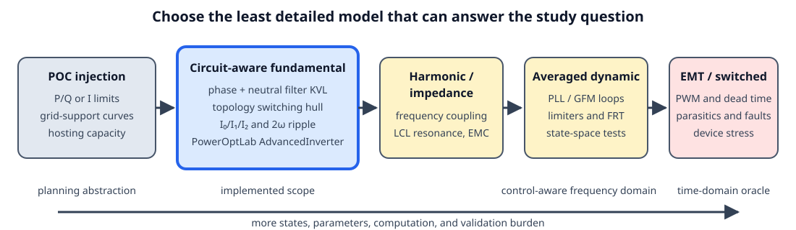
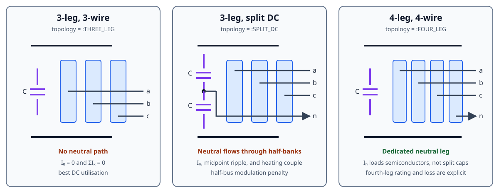

Inverter-based resources
PowerOptLab has two complementary inverter abstractions:
- a POC injection model for studies whose inputs and outputs are contractual active/reactive-power or current commands; and
AdvancedInverter, a circuit-aware fundamental-frequency model for studies in which the internal converter voltage, output filter, bridge topology, neutral path, or DC-link stress changes the feasible operating set.
Neither is universally “more correct.” The defensible model is the least detailed one that retains the mechanism relevant to the study question.

Implemented physical scope
AdvancedInverter represents RMS fundamental phasors and derives selected line-frequency DC quantities from them. It includes:
- an internal converter node behind either a reduced conductor-domain series primitive or an explicit LCL network with two primitive arms, a damped midpoint capacitor, distinct arm currents, and an optional POC shunt;
- converter-side apparent-power and conductor-current limits;
- 3-leg 3-wire, 3-leg split-DC 4-wire, and 4-leg 4-wire switching-feasibility regions;
- Fortescue zero-, positive-, and negative-sequence current limits;
- neutral current, unequal split-link half-bank capacitance, fundamental and mean midpoint displacement, bounded balancing charge, 2ω power pulsation, DC-bus voltage ripple, and simultaneous frequency-weighted capacitor budgets;
- an optional ideal shared-carrier PWM audit with SPWM or centered continuous PWM, switching-current/voltage-ripple diagnostics, optional finite DC-source R–L current sharing, split-rail voltage stress, antiresonance screening, and conservative operating-point-dependent capacitor-reserve closure;
- an optional carrier-harmonic AC audit through reduced-L or primitive LCL networks, including phase/neutral mutual coupling, damping, path-resolved ripple, and total-RMS current-limit closure;
- fixed, current-linear, and current-quadratic converter loss terms, including the neutral semiconductor leg for a 4-leg bridge, plus optional weighted capacitor-ESR dissipation; and
- a bounded balanced internal voltage for steady-state grid-forming studies.

The topology names are deliberately literal:
topology | AC conductors | Neutral return | DC structure | Distinct limiting mechanism |
|---|---|---|---|---|
:THREE_LEG | 3 | none; ΣIₓ = 0 | monolithic link | line-to-line switching hull |
:SPLIT_DC | 4 | capacitor midpoint | two possibly unequal half-banks in series | half-bus utilisation, mean/fundamental midpoint motion, individual-bank heating |
:FOUR_LEG | 4 | fourth semiconductor leg | monolithic link | fourth-leg current and loss |
The split-DC model is a three-leg bridge with a split capacitor link. It is not the reconfigurable four-leg-plus-split-link hybrid studied by Deakin, Heidari, and Deng. That hybrid is a useful future topology, but it should not be silently folded into either existing category.
Read this chapter in layers
- Scientific foundations derives the model from conductor KVL/KCL, complex power, symmetrical components, capacitor energy, and the ideal switching hull.
- Phase-aware local control laws derives and classifies topology-compatible Volt-var/Volt-watt extensions for unbalanced voltages.
- Phase-aware inverter-control API constructs and solves the implemented three-leg laws with executable examples.
- Inverter-control study methodology defines the software layers, upstream seams, validation gates, scaling tests, and hardware-sizing experiments for network-wide comparisons.
- Verification and benchmark cases maps claims to unit, regression, paper, and higher-fidelity tests.
- IBR references is the maintained bibliography and literature roadmap.
- The advanced inverter component reference documents the current API and equations; the modelling tutorial shows how to choose and parameterise it.
Reproducible study tutorials
The focused tutorials turn the equations into comparative engineering studies:
- Choosing an IBR topology under unbalance compares 3-leg, 4-leg, and split-DC capability on identical balanced and sequence-rich grids.
- DC-source impedance and split-link carrier stress demonstrates harmonic current sharing, source loss, spectral convergence, antiresonance screening, and unequal rail voltage ripple.
- Carrier harmonics through L and LCL filters separates converter, grid, midpoint-capacitor, and neutral ripple and tests the reduced-filter limiting case.
Each starts from a complete BMOPF network and includes publication checks. The general modelling tutorial remains the best entry point for choosing the correct abstraction; these three are designed to be run as research-study templates.
What this model must not be used to claim
This is not a harmonic power flow, sequence-impedance scan, averaged control model, or switched EMT model. In particular, grid_forming=true is a steady-state internal-voltage constraint, not evidence of synchronization, fault ride-through, black start, stable current limiting, or multi-inverter power sharing. i_sw is still a manually reserved RMS allowance; the separate carrier audit is an ideal PWM reconstruction around a frozen fundamental operating point, not a switched network solution.
Those boundaries are intentional. Moving to the right on the fidelity ladder requires controller transfer functions, detailed filter parasitics, semiconductor and capacitor frequency/temperature data, and a different validation oracle. The chapter records those next layers without pretending they are already implemented.
Diagram roadmap
Fourteen diagrams now cover abstraction level, physical topology, conductor KVL, the explicit LCL midpoint, sequence-to-hardware pathways, a published 2ω waveform case, the balanced voltage-utilisation boundary, and asymmetric split-link charge/current pathways, the carrier-PWM audit and reserve feedback, DC-source/capacitor harmonic current sharing, carrier harmonics through the LCL network, and the phase-aware control signal chain, curve envelopes, and ripple disk. The last ten are generated by docs/scripts/generate_ibr_figures.jl so numerical labels cannot drift from the derivation.
The next most useful figures are a constraint-dependency map from parameters to InverterResult diagnostics, and a validation pyramid linking exact identities, published PLECS cases, EMT sweeps, and hardware measurements. A later switching-state figure should focus on dead time, discontinuous/interleaved PWM, and common-mode earth paths only when those mechanisms are present in the equations.